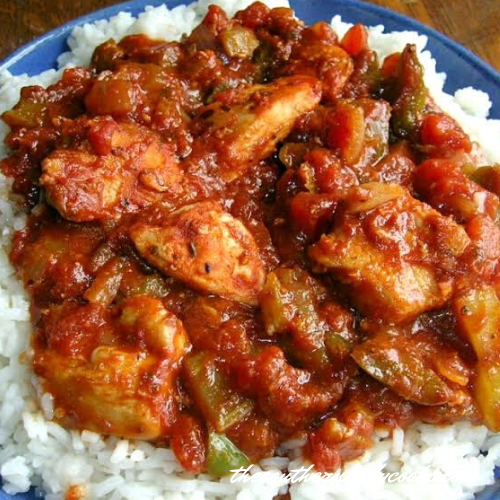

Creole Chicken

Description
Saute chicken pieces in the oil until no longer pink. Remove and keep
warm. In the same skillet, saute the onion, green pepper and celery in the
remaining oil until tender. Stir in the tomatoes, broth, tomato paste and
seasonings. Bring to a boil, reduce heat; cover and simmer for 5 minutes.
Return chicken to the pan; heat through. Serve with rice. Makes about 8
servings. Enjoy!
Note: We like this dish served over the rice the first night. If I have
any left over I put it in a baking dish, mix the rice with the chicken and
sauce, sprinkle with shredded cheese and put in the oven until warm and
the cheese is melted the next night. Serve with garlic bread and a salad
for a meal.
Ingredients
- 4 to 6 Chicken Breasts
- 1/4 cup oil
- 1 medium onion, chopped
- 1 green pepper, chopped
- 1 cup celery, chopped
- 1 14.5 oz can diced tomatoes (not drained)
- 1 cup chicken broth
- 1 6 oz can tomato paste
- 1/4 teaspoon pepper
- 1/2 teaspoon salt
-
1/2 teaspoon each dried basil, oregano, thyme, marjoram, and minced
garlic
- 2 cups of cooked rice
Steps
-
Saute chicken pieces in the oil until no longer pink. Remove and keep
warm. In the same skillet, saute the onion, green pepper and celery in
the remaining oil until tender. Stir in the tomatoes, broth, tomato
paste and seasonings.
-
Bring to a boil, reduce heat; cover and simmer for 5 minutes. Return
chicken to the pan; heat through. Serve with rice. Makes about 8
servings
Back